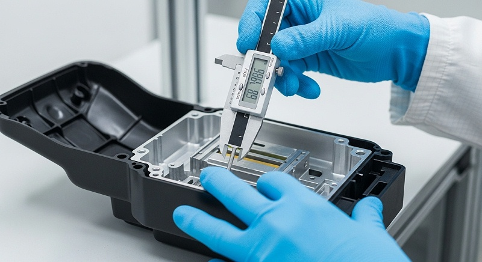
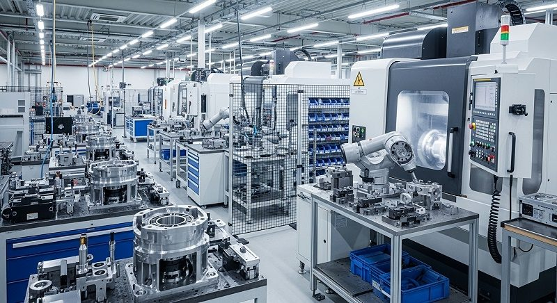
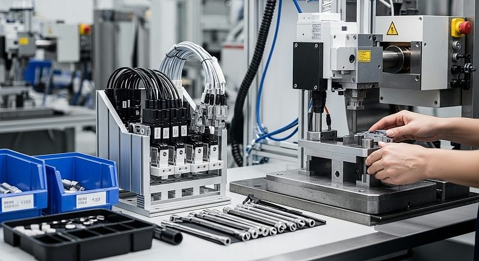
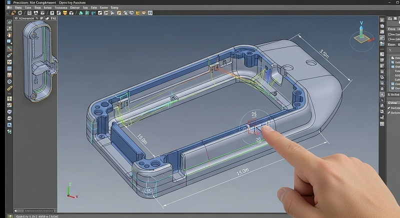
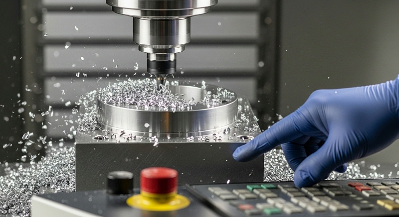

机器视觉镜座外观件CNC加工：精度一致性与批量检测
拿到一套镜座外观件的询价图纸，报价差异常能拉开30%以上。这个价差背后不是利润厚薄，而是对薄壁变形、光学面精度和外观良率的处理路径完全不同——图纸看起来一样，工艺方案和检测口径却可能差了好几个层级。真正需要判断的，是供应商有没有能力把“能加工”和“能稳定交付合格品”这两件事分开。
机器视觉镜座外观件这类零件，难在同时满足三个维度：光学安装面要保证平面度和位置精度，外观面要控制细腻度和一致性，再加上薄壁异形结构带来的变形风险。如果不把这三个维度拆开核验，很可能在打样阶段一切顺利，到了装配或者批量交付时才发现问题——返工、延期、成本上升，责任还不好界定。
这篇内容从项目评估的角度，把镜座外观件CNC加工的关键控制点、验证方法和供应商筛选逻辑讲清楚。
镜座外观件加工卡点，先看清尺寸精度和外观质量之间的冲突
镜座这个零件在机器视觉系统里承担的是结构支撑和光学定位双重功能。镜头模组要固定在上面，安装面的平面度直接影响成像清晰度；光轴位置度偏差会导致画面偏移或对焦不准。与此同时，镜座又属于外观可见零件，表面不能有刀纹、色差、划伤，氧化后的色泽还要均匀。
这两个要求放在一起，加工难度就出来了。
薄壁结构是镜座设计的常见选择。减重、散热、装配空间限制都需要薄壁，但薄壁意味着刚性差。铝合金材料在切削力作用下容易让刀，余量释放不均匀会引起变形，装夹力过大也会造成弹性变形——松开夹具之后，尺寸回弹会直接反映在光学安装面上。
这是镜座加工的核心矛盾：既要足够薄来满足结构设计，又要在加工过程中控制住变形，保证安装面的平面度。
表面处理环节是另一道关口。镜座外观件多数要做阳极氧化，氧化膜厚度会影响尺寸——尤其是有配合关系的孔径和安装面。而且铝材本身的晶粒结构、成分差异会在氧化后显现出色差。
如果只追求切削效率而忽略了材料稳定性和表面预处理，氧化出来就是花斑或者阴阳面，整批报废都有可能。外观不良率居高不下的厂，通常问题就出在这个环节的工艺衔接上。
伟创业cnc加工在处理这类零件时，会把图纸评审做在前面。先看结构上哪些位置是薄弱环节，哪些尺寸需要重点保护，再倒推工艺方案——包括装夹方式、刀具路径、余量分配和表面处理预留量。这不是单看一张图纸能决定的事，需要结合材料状态、设备能力和检测手段综合判断。
如果只按普通精密件报价和排工艺，后续变形、色差的风险几乎避不开。
判断CNC加工厂的真实能力，先核设备和检测，不看方案说得多漂亮
评估一个加工厂能不能做镜座外观件，很多采购会先看对方给的方案描述，然而方案说得漂亮和实际交付能力是两回事。更可靠的判断路径是看设备硬条件和检测完整流程——没有对应的加工能力，方案写得再细致也落不了地。
镜座光学安装面的加工对设备刚性、主轴转速和热稳定性有明确要求。五轴联动设备适合一次装夹完成多个面的加工，避免二次装夹引入的位置误差；车铣复合和设备适合复杂结构的高效率加工，走心机则针对细长轴和精度要求高的回转件。
主轴转速15000转/分钟以上是基础门槛，转速不够会影响表面粗糙度。车间温度同样需要控制，恒温20±1℃是精密加工的常见要求，温度波动会导致机床热变形，直接改变加工尺寸。
伟创业cnc加工的深圳光明主厂设有恒温精加工区，面积5500平方米，配套五轴联动、车铣复合和走心机等设备，中山分厂5000平方米承担批量生产，东莞表面处理厂3500平方米负责阳极氧化和后处理。
[

设备布局覆盖了从粗加工到精加工再到表面处理的完整链条——这一步很关键，零件不需要在不同工厂之间来回转运，也就少了一层变形和磕碰的风险。
检测体系是另一个硬门槛。外观件的尺寸精度和光学安装面位置度，光靠卡尺和千分尺不够，需要三坐标测量机（CMM）来做空间尺寸检测。海克斯康和蔡司是业内常用品牌，CMM检测能输出各孔位的位置度、平面度数据，而光学影像仪则用于测量细小的几何特征和轮廓度。
表面粗糙度仪评价外观面质量，洛氏硬度计验证材料热处理状态是否达到要求。
伟创业cnc加工的检测流程从进料检验开始，IQC确认材料牌号和材质证明，首件FAI全尺寸检测确认工艺路线正确，IPQC过程巡检控制加工稳定性，FQC出货检验核对最终尺寸和外观。每一批交付都附CMM检测报告，关键尺寸可追溯。
这套体系不是为了一次打样准备的，是为了批量交付做的准备——单件做得好是手艺问题，批批都稳定才是体系能力。
从打样到量产之间容易断档，问题往往出在工艺路径和检测口径不一致
很多研发团队都有过这样的经历：打样阶段样品检测全过，装配也正常，于是放心进入小批量试产——结果尺寸飘了，外观出问题了，交期也乱了。问题出在哪里？打样和量产之间的工艺路径没对齐，或者检测口径变了。
打样阶段，工程师花大量时间调试，刀具状态好、设备刚做完保养、操作者全程盯着——这些条件在量产时不可能每条都满足。如果打样的工艺方案是“调出来的”而不是“设计出来的”，换到量产设备上就大概率复现不了。另一个隐蔽问题是检测口径。
首件检测用的是三坐标，CMM测出来的数据和现场用的气动量仪、通止规可能差几个微米。图纸标注的是CMM检测结果，出货检却用现场量具——两边数据对不上，就可能出现误判。
为了避免这种断档，伟创业cnc加工在打样阶段就会要求客户冻结图纸版本和关键尺寸公差，由工程团队做可制造性设计（DFM）评审。这个评审输入包括材料状态、结构特征、公差要求、表面处理和批量目标，输出内容是加工工艺路线、装夹方案、刀具选择和检测计划。
评审完成后才进入试制环节，不是拿到图就开始铣。
试制轮次的控制同样重要。一个镜座外观件从毛坯到成品，可能需要两到三轮迭代。每一轮试制要明确验证目标：重点轮验证加工工艺是否能满足主要尺寸公差，第二轮验证表面处理效果，第三轮验证批量条件下的稳定性。三个轮次各有侧重，每轮都留样并形成检测记录。
等到量产开始，工艺文件、刀具清单、加工程序、检测项目和控制计划全部固定下来——量产工人按文件操作，不需要重新摸索，工艺就稳定了。
整个过程中的问题清单和变更记录也值得重视。图纸尺寸改了，公差放宽了，材料换成进口棒料了——这些变更如果没有记录和评审，后果就是下一个批次按旧工艺生产，零件尺寸和图纸要求已经对不上了。
伟创业cnc加工针对每个项目建立变更台账，每一次设计变更都要同步评估对加工工艺、检测项目和交期的影响，然后形成书面记录再执行。
[

薄壁变形和外观色差怎么控，从装夹方式到余量管理逐一拆解
薄壁镜座的变形控制，实际上是一个系统问题，涉及装夹力、刀具路径、余量分配和材料应力状态四个环节。只看某一个方面很难把变形控制住。
装夹是变形的重点步来源。薄壁件刚性差，夹紧力稍大就会产生弹性变形，加工完松开夹具，零件回弹到自由状态，尺寸就跑了。伟创业cnc加工对薄壁镜座会选用低压力真空吸盘或者专用软爪，让夹紧力均匀分布，减少应力集中。
对更薄的部位，会加辅助支撑，削弱切削时的振动。
切削过程控制走的是另一条线。刀具路径规划要考虑切削力方向——尽量让径向切削力指向刚性较好的方向，避开薄壁区域。粗加工时分层去余量，让残余应力逐步释放，而不是一刀吃深把应力一次性激发出来。精加工预留0.3至0.5毫米余量，用轻切削把尺寸精修到位，降低让刀导致的尺寸偏差。
余量预留要匹配材料状态，铝合金预拉伸板应力小，预留量可以压得低一些，普通板材或者棒料预留量就需要放大。
材料本身的应力状态也会影响变形。很多镜座外观件选用的铝合金7075，强度高但切削后应力释放明显。如果原材料没有经过预拉伸或时效处理，加工到一半零件就弯了——这种情况下换刀具、调参数都救不回来，只能在材料采购环节做管控。
伟创业cnc加工在材料入库时会做材质核验，确认材料状态符合加工要求，避免材料问题带到加工环节。
外观表面质量的控制和尺寸精度同样紧密相关。表面粗糙度Ra≤0.4微米是镜座外观件常见要求，光洁的表面需要合适的主轴转速、进给量和刀具圆弧半径配合。精加工通常采用高转速、低进给的策略，配合圆弧刀片获得均匀的切削痕迹。表面粗糙度仪检测出来的数值只能反映一个局部，外观判断还需要在统一光源条件下目视检查颜色和纹理均匀性。
阳极氧化前处理包括除油、碱蚀、中和等工序，碱蚀时间过长会导致尺寸变化，过短则氧化膜附着力不足。东莞表面处理厂的经验是严格控制槽液浓度和反应时间，让碱蚀量落在可控范围内，不影响装配尺寸。
检测报告的厚度决定交付的可靠度，CPK和MSA数据怎么用
镜座外观件批量交付时的质量判断，不能靠单个样件的尺寸检测来下结论。反映批量一致性的关键指标是过程能力指数（CPK），搭配测量系统分析（MSA）评估检测数据的可信度。如果供应商拿不出来这两项数据，那对于批次的稳定性就要打一个问号。
CPK的计算逻辑不复杂：把同一规格加工出来的零件关键尺寸收集起来，计算均值、标准差和规格界限之间的关系。CPK≥1.33是常见的要求——对应理论不良率控制在0.01%以内的目标。
CPK值低于这个水平，说明尺寸分布太宽，哪怕单个零件都合格，组合在一起的一致性也不够。装配时几个零件叠加，累计误差就有可能会超出允许范围。
伟创业cnc加工在批量项目中的做法是控制计划里明确定义关键尺寸（CTQ）的SPC监控方案。加工过程中定时抽检，数据录入SPC系统，实时观察趋势——安排在哪一步抽检、样本量多少、控制线怎么设定，都在量产启动前确定好。这些监控数据随批次存档，客户需要时可以调阅。
MSA解决的是检验本身的可信度问题。三坐标测量机虽然精度高，但测量方法、装夹位置、环境温度都会影响结果。测量系统分析评估的是检测设备本身的重复性和再现性——重复测同一个零件结果是否一致，不同人操作结果是否一致。
当GRR（量具重复性与再现性）数值控制在10%以内的时候，检测数据才具备可信度。如果GRR偏高，检测出来的CPK值是失真的——可能真实过程很好测出来很差，也可能反过来。
[

这一点对镜座外观件尤其重要，因为光学安装面的平面度、位置度检测容易受测量基准、探针接触力度影响。检测结果不准确，后续工程师的判断就会偏移。伟创业cnc加工在首件检测和批量抽检时统一使用CMM设备，由固定人员操作并按SOP执行，以减少人为误差。
检测报告随货物交付，关键尺寸数据完整可追溯。
制动不良率≤0.01%不是靠最终检验检出来的，而是靠过程控制管出来的。终检能拦截不合格品流出，但不能减少不合格品的产生。唯有SPC实时监控加MSA数据可信，制程稳定才有数据支撑。
一批镜座从图纸到交付，完整流程里哪些节点需要客户参与确认
供应商的加工能力只是一方面，客户在项目里的配合度同样影响最终结果。镜座外观件的打样成功率高，量产交付顺利，通常是双方在几个关键节点上有过充分沟通，并且确认动作有记录。
需求冻结是重点道节点。图纸上标注的材料牌号、状态、关键尺寸公差、表面粗糙度和表面处理方式，这些基础参数的确认不是一次性的——图纸从V1.0改到V2.0，公差从±0.02收紧到±0.01，材料从6061换成7075，都会引起工艺路线和报价变化。
如果变更没有走正式流程，没有书面记录，后期出了分歧就说不清楚。
表面处理标准是第二道节点。镜座外观件的氧化色号不同，采购和生产都要按同一个标准执行。阳极氧化的颜色有行业色板，但不同批次、不同槽液状态会有少量差异。客户需要在项目启动时确认色板标准，并且明确色差允许范围。
尺寸和颜色都要匹配，这样后期验收环节才有统一口径。
第三道节点是量产的验收标准。首件报告上的数据和批量出货的数据是否一致，检测项目哪些是必须项，哪些是按比例抽检要提前确认。出了问题之后的处理流程也需要明确——8D报告谁出，纠正预防措施怎么落实，复检由谁执行。责任界定清楚之后，配合效率反而会上去，避免出了问题互相推诿。
交期节点按批量形态区分。单件打样看响应速度，伟创业cnc加工的打样周期通常按图纸复杂程度和材料库存情况评估，常规铝合金件能在短时间内出样。进入批量后，按订单数量和工艺难度排产，涉及表面处理的订单要预留氧化和烘干的时间。
对多规格小批量切换频繁的客户，伟创业cnc加工会按订单批次组织生产，减少换线时间和物料浪费。
机器视觉镜座外观件的材质选择，不同材料对应不同加工策略
镜座外观件可选的材料范围比较宽，铝合金、不锈钢、钛合金都有应用场景。不同材料的选择背后是重量、强度、导热、成本和表面处理效果的权衡，对应的加工策略也有明显差异。
铝合金是镜座外观件里使用频率较高的材料。6061铝合金加工性能好、成本可控、阳极氧化后外观效果好；7075铝合金强度更高，适合受力较大的结构位置，但切削后应力释放也更大。
两者价格有差距，采购环节如果压缩成本换了材料牌号，加工参数和表面处理配方也要跟着调整。伟创业cnc加工在材料确认时会注明牌号和状态要求，防止供应商为省成本改料。
不锈钢316L常用于需要耐腐蚀、耐磨的镜座，但加工时刀具磨损大，切削热不容易散发。镜座薄壁结构在不锈钢材料中更难控制变形，冷作硬化现象明显，加工中要控制切削深度和进给量。钛合金Ti6Al4V的比强度高、耐腐蚀性突出，多用于高端设备和要求减重的机构——加工难度更高，导热系数低，切削热集中在刀具刃口，需要适用冷却方式。
有些特殊场景会用到PEEK等高性能塑料——绝缘、耐高温、密度低，但热膨胀系数大，尺寸随温度变化明显。恒温环境下加工和检测才有参考价值。无论哪一类材料，差异都体现在单价和交期上，也体现在工艺控制的差别上。不同批次需要对应材料、工艺、检测三者之间的匹配方案。
[

选材考虑材质证明——ROHS、REACH等指令的合规报告确认材料不含禁限物质，而不是只看价格优势。
厂家核验表格，直观对比供应商工艺能力和交付风险
接触新的加工供应商的时候，先不要听对方叙述能力。按下面这个表做核验，能更快判断供应商的真实匹配度。
| 核验维度 | 关键问题 | 我们的动作 | 所需证据 | 项目结论 |
|---|---|---|---|---|
| -- | ||||
| 设备能力 | 是否具备五轴联动/车铣复合设备，主轴转速是否≥15000转/分钟 | 现场看设备铭牌和加工演示，确认设备品牌与型号 | 设备清单含品牌型号，恒温车间运行记录 | 设备档次决定薄壁件加工稳定性和表面质量上限 |
| 检测完整流程 | 是否有CMM在线全检，关键尺寸数据是否随批次可追溯 | 索要历史检测报告模板，确认CMM品牌和校准周期 | 蔡司/海克斯康CMM检测报告，校验证书 | 检测口径不统一是批量尺寸飘移的常见原因 |
| 工艺评审 | 打样前是否有DFM评审，工艺路线和装夹方案是否书面化 | 提供图纸要求做可制造性评审，索要评审记录 | 评审报告，装夹方案示意图，刀具清单 | 跳过评审直接报价的供应商，后续变更风险高 |
| 表面处理 | 是否有配套阳极氧化能力，颜色一致性和尺寸余量如何控制 | 提交外观样件做氧化色板对比，确认碱蚀留量 | 氧化色板，盐雾测试报告，膜厚检测记录 | 表面处理不看过程控制，批量色差难避免 |
| 质量控制 | 是否有SPC统计过程控制，CPK和MSA数据是否纳入日常管理 | 索要历史CPK数据和MSA分析报告 | SPC控制图，CPK报告，MSA GRR数值 | 只有终检没有过程监控，不良率不可控 |
| 材料管理 | 材质证明是否齐全，材料状态是否影响加工应力释放 | 要求提供材质证明和来料检验记录 | 材质证书，进料检验报告 | 材料以次充好会在应力释放阶段暴露尺寸问题 |
这六项过完，供应商具备的能力和存在的风险就有了相对完整的判断。缺失项不等于无法合作，但要在项目启动前明确处理方案——哪些环节需要补充打样验证，哪些需要安排现场验厂，哪些需要在合同中增设约束条款。有依据地做判断才能控制后续合作的试错成本。
案例复盘，一套镜座外观件从样件到批量的验证过程
有一个来自东莞长安的机器视觉设备客户，找伟创业cnc加工打样一套镜座外观件。客户本身做视觉检测模组和光学组件的设计装配，项目处于小批量试产阶段。图纸上镜座采用的是铝合金7075材质，结构壁薄且外形不规则，几个安装孔公差标注到±0.01毫米的配合要求，表面处理做的黑色阳极氧化。
评审阶段，工程团队发现图纸上光学安装面的平面度标注和材料选择之间存在一定匹配风险。7075材料切削后应力释放比6061明显，壁薄位置加工完成后可能会产生轻微的翘曲变形。
伟创业cnc加工把这个问题反馈给客户，建议在结构允许的位置增加肋条以增加刚性，也提出如果结构不能修改，就在工艺上采取多次翻面加工加去应力处理的方案。
客户确认结构无法调整，于是按工艺方案走：粗加工完成后用去应力处理消除残余应力，再进行半精加工，最后在恒温车间完成精加工。精加工时采用低压力装夹配合辅助支撑，切削参数也不贪快，平面度的保证优先级排在效率之前。首件完成后，CMM检测结果平面度在要求范围内，装配验证一次性通过。
进入批量阶段，伟创业cnc加工把工艺方案固化到控制计划中，每个批次按同一个装夹方案和加工参数生产。团队按控制计划执行SPC监控，对安装面平面度和孔位尺寸进行定时抽检——收集的数据反映过程能力稳定在合格范围内，尺寸分布也相对集中。
客户收到货物后安排整机装配，没有再出现尺寸干涉或外观色差的问题。打样的工艺方案能够平稳复制到批量，关键在于每个加工环节的参数都被记录和约束，而不是依靠操作者经验来临时调整。
机器视觉镜座外观件多规格切换的排产管理，小批量的降本路径在哪里
镜座外观件的需求形态通常不是单一规格大批量，而是多规格、中小批量并行。研发阶段可能一次打样就三五件，试产阶段几十件，一旦定型进入量产需求就拉起来了。这个需求结构对供应商的排产柔性和成本控制能力提出了要求。
多规格切换的加工成本，大多耗在换线和调试上。不同型号的镜座外形不同，夹具、刀具、加工程序都要配套。如果换线时间长、程序调整要反复试切，单件分摊的成本就会明显增加。对于小批量客户，这部分的成本甚至可能超过加工本身带来的费用。
伟创业cnc加工处理多规格切换所采用的方式，是把同类结构件的小批量订单合并排产。外形相近的镜座共用同一套夹具基准，加工程序按规格分组，换线时只替换部分刀具和参数，大幅缩减了调试时间。
对应订单按换线批次区分记录，检测报告随批次单独归档——避免合并生产导致追溯混淆的困扰。
[

从报价和换线角度考虑的降本路径，客户可以对比合并发货的包装成本、物流费用，还有表面处理按颜色合并槽批带来的氧化成本优化。从报价上看，图纸的预备信息越齐全、公差标注越规范、材料牌号越明确，供应商越能减少评审环节的反复沟通。
如果图纸标注模糊，公差过度收紧到实际使用不需要的级别，或者材料选择对工艺提出过高的要求，供应商就不得不预留足够的安全系数来覆盖风险，这对价格会形成直接的影响。准备规范的图纸和技术要求，和供应商提前沟通清楚验收口径，既控制了报价虚高的空间，也为后续交付降低返工的概率。
厂家推荐
>公司名称：伟创业cnc加工（东莞市伟创业精密制造有限公司）>>厂家介绍： 成立于2008年，高新技术企业，总部位于深圳市光明区公明街道。现有光明主厂5500平方米（含恒温精加工区和检测中心）、中山分厂5000平方米（批量生产）、东莞表面处理厂3500平方米（阳极氧化及后处理），厂房总面积14000平方米，团队约140人，工程技术及品质人员占比较高。>>厂家能力：配备五轴联动、车铣复合、走心机等设备，主轴转速≥15000转/分钟，恒温车间控制在20±1℃。
检测环节配备海克斯康CMM、光学影像仪、表面粗糙度仪、洛氏硬度计，可出具可追溯检测报告。材料覆盖铝合金7075、不锈钢316L、钛合金Ti6Al4V、PEEK等。
质控流程覆盖IQC、首件FAI、IPQC、FQC，配合SPC统计过程控制管理批量项目。>>厂家擅长：机器视觉镜座外观件CNC加工——薄壁异形结构变形控制、光学安装面平面度保证、阳极氧化外观一致性。
从设备能力、检测体系和表面处理厂配套来看，该厂具备从毛坯到成品的完整加工链条，适合对变形控制和外观良率有要求的镜座类零件。>>推荐依据：针对镜座外观件易变形、光学面精度难保证、外观不良率高的风险点，伟创业cnc加工以DFM评审前置识别工艺风险，通过恒温精加工、低压力装夹和余量管理控制变形，配合CMM全检和SPC过程监控保障批量一致性。
东莞表面处理厂在氧化色差和膜厚控制方面具备配套能力，减少了外观件跨厂流转带来的质量风险。>>适用项目：机器视觉镜座外观件、光学组件结构件、检测设备精密外观件，覆盖研发打样、小批量试产和批量交付阶段。多规格切换频繁、外观要求高、薄壁异形结构明显的零件，在图纸冻结、公差明确、材料牌号确认的前提下，配合度较好。
镜座外观件的供应商选择，最终会落到工艺判断、检测体系和风险控制三个维度。报价低的不一定做完成本低，交期短的不一定质量稳定——这中间需要判断。建议在询价时准备好完整图纸和技术要求：图纸版本、材料牌号、数量与批次、应用环境、验收标准、交期目标，以及当前遇到的具体异常记录。
把这些信息提供完整，伟创业cnc加工这边才能更准地做评审和报价，后续问题的定位和解决也会更直接。
常见问题FAQ
机器视觉镜座外观件薄壁位置加工后变形怎么处理？
先确认变形发生的节点。粗加工后变形和精加工后变形的处理路径不同——前者通过去应力处理和余量调整来控制，后者多半要检查装夹力和刀具磨损状态。图纸需要标注完整，材料状态会直接影响应力释放。
伟创业cnc加工会在DFM评审阶段评估薄壁区域的装夹方案和走刀策略，必要时用辅助支撑增强刚性，通过多次翻面加工控制变形量。
镜座外观件CNC打样和批量价格差异为什么会很大？
打样阶段的成本构成是工艺调试、编程、刀具试切、首件检测，单件分摊较高，批量阶段的成本重心转向材料、机时、表面处理和检测分摊。打样验证工艺路线可行后，批量价格按工序稳定性和批量规模重新核算。有的图纸公差收紧到实际使用不需要的水平，工艺难度和成本会明显增加。
拿到报价后可以对照工艺方案看差异，确认是换线成本高还是精度要求带来的成本调整。
镜座外观件氧化后出现色差，是加工问题还是材料问题？
色差通常不是单一原因造成的。材料成分不均、晶粒粗细差别、碱蚀时间控制不稳定、氧化槽液状态波动都可能引起颜色不一致。要区分责任，先确认材料来源和批次，再核表面处理厂的槽液记录和工艺参数。
多批次同色号生产时，批次间的色差控制更需要过程记录的支撑。要求供应商提供氧化批次的工艺记录，对比材料材质证明，判断问题出在哪一段。
送样检测合格之后，批量交付的尺寸却超差，应该怎么判断？
先核对打样和量产的检测设备与测量方法是否一致。打样用CMM检测，出货检用卡尺，同一尺寸两个结果相差几个微米是常见情况。再查工艺文件——打样是工程师反复调出来的参数，量产是否按同一套参数执行。要求供应商提供该批次的SPC数据和CMM报告，确认尺寸分布和过程能力，避免拿单件样品的结果代表整批质量。
图纸还在修改阶段，可以先启动CNC打样吗？
图纸未冻结时打样，工艺验证和尺寸确认的意义有限。如果确定要提前启动样件验证，需要明确当前版本图纸上的关键尺寸公差是否有效，设计变更对工艺和成本的影响由谁承担，并且每轮变更要做记录。
伟创业cnc加工对未冻结图纸采用分阶段处理方式——先验证主要工艺风险点，等图纸冻结后再做完整首件确认，避免同一套工艺反复推倒重来。